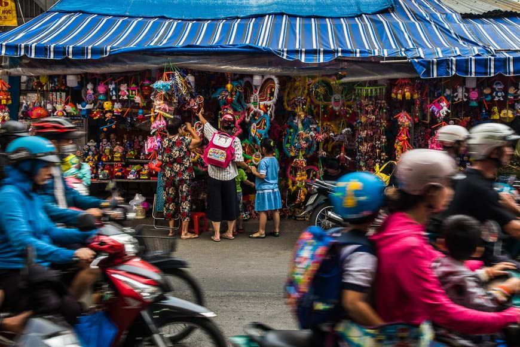
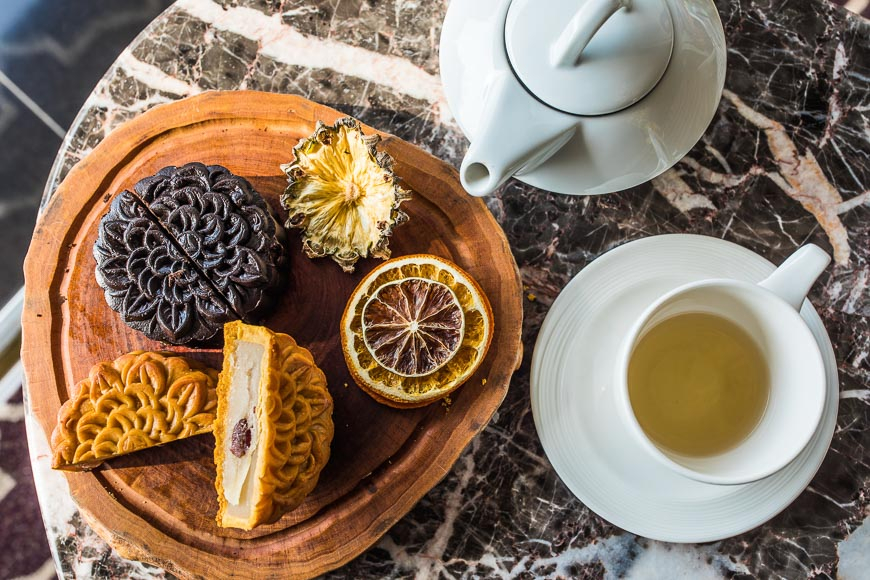
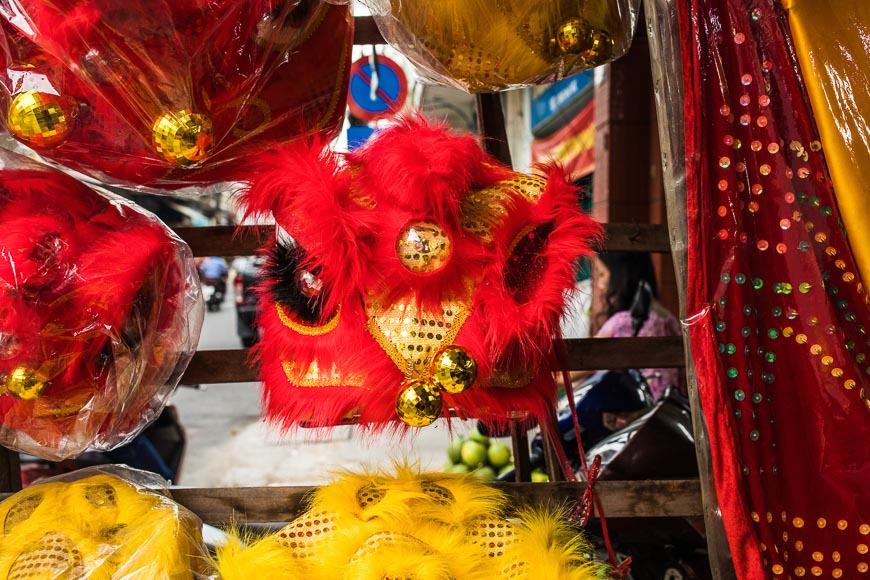

Origins of Tết Trung Thu
While the Mid-autumn Festival originated in China and is celebrated in many Asian countries, the
Vietnamese version has its own traditions and legends. Our best-known tale is about a man named Cuội
who
hung on to a magical banyan tree as it floated up to the moon. We say that if you look closely at
the
full moon, you can see the shadow of a man sitting under a tree. Children parade lanterns in the
streets
the night of Mid-autumn Festival to help light the way to earth for Cuội from the moon.

While the Mid-autumn Festival originated in China and is celebrated in many Asian countries, the
Vietnamese version has its own traditions and legends. Our best-known tale is about a man named Cuội
who
hung on to a magical banyan tree as it floated up to the moon. We say that if you look closely at
the
full moon, you can see the shadow of a man sitting under a tree. Children parade lanterns in the
streets
the night of Mid-autumn Festival to help light the way to earth for Cuội from the moon.
The celebration of the harvest is an important part of Tết Trung Thu, as many Vietnamese live in rural
areas and work as farmers. Tết Trung Thu marks a joyous occasion when the work is finished and there’s
time to spend with loved ones.
Preparations begin

In the weeks before Tết Trung Thu, you will see and hear groups of lion dancers practicing on the streets.
Mooncake stalls appear on every other corner, pop-ups with elaborately decorated boxes filled with a variety
of mystery cakes and fillings. City districts team up with preparations of toys, lanterns and colourful
masks in anticipation. The most popular Trung Thu lantern is a star made with red cellophane. You’ll see
these lanterns for sale on streets all over Vietnam in the days leading up to the festival.
Mooncake madness
All across Vietnam, families welcome Tết Trung Thu by placing a five-fruit tray and cakes on our ancestral
altar. We offer the food to our ancestors and worship, before feasting on mooncakes -- usually outside under
the light of the moon. Round or square, these cakes are moulded with elaborate details of flowers, carp and
geometric patterns.
The two most common types are bánh dẻo (soft, sticky cakes with a mochi-texture) and bánh nướng (baked cakes
with a thick wheat crust). Mooncakes in Vietnam come in a seemingly infinite variety of flavours, both sweet
and savoury. Feel free to buy a box of mooncakes to enjoy yourself, or to share with your Vietnamese friends
and hosts.

Moonlit celebrations
On the night of the full moon, children bearing brightly coloured lanterns form raucous processions and tour
their neighbourhoods singing songs. You will see a male dancer wearing a round happy-faced mask that
symbolises the moon. He urges the lion dancers on and delights the crowd with his comical moves. This is the
Earth God, Ông Địa, who represents the fullness of the earth and reminds onlookers to give thanks for its
bounty. Ông Địa always brings joy and puts a smile on every Vietnamese child's face.
Lion dancing

Lion dancing or múa lân is an essential element of the Mid-autumn festivities. Groups of children gather,
each carrying a red lantern. Everyone sings along to the cheerful Mid-autumn Festival songs memorized since
childhood. Excitement peaks when drumbeats ring out from down the dark street. The smaller kids shrink back
and the older ones run forward as a mythical lion bursts into their courtyard, its giant head and sinuous
body borne by a team of acrobatic dancers.
With its gaping mouth and protruding eyes, the lion is both comical and formidable. The dancers lunge closer
to the crowd, making the kids scream and laugh at their antics. Under the light of the full moon, the lion’s
red sequined body sparkles as it dances. For Vietnamese children, not much else beats this spectacular
performance on the night of Trung Thu.
Where to celebrate the Mid-autumn Festival in Vietnam
Hanoi
If you’re in Hanoi before the Mid-Autumn Festival, be sure to visit Hàng Mã and Lương Văn Can. These streets
will be packed with a variety of toys and lanterns. Another Hanoi address to visit before the big night is
87 Mã Mây, where you can watch local artisans preparing festival crafts. On the eve of Mid-autumn, the Youth
Theatre on Ngô Thì Nhậm Street and the Children’s Palace on Lý Thái Tổ Street host children’s musical shows.
Hội An
Hội An is famous for its full moon celebrations year-round. For the Mid-autumn Festival, this riverside town
kicks the party up a notch. Locals and travellers pour into the Ancient Town on foot. Dancers and their
drumming troupes prowl the streets, performing in front of pagodas and businesses. There's music and all
sorts of revelry up and down the banks of the Thu Bồn River, and in the countryside, every home has an altar
out front.
Ho Chi Minh City
The area of Chợ Lớn in Ho Chi Minh City is home to exciting Mid-autumn festivities. Stop by Lương Như Hộc
Street, famous for its lanterns, masks and lion heads overflowing on the sidewalks. This is the perfect spot
to pick up a souvenir lion head. The shop at 109 Triệu Quang Phục Street has been selling lion heads to the
city’s best dancers for five decades.